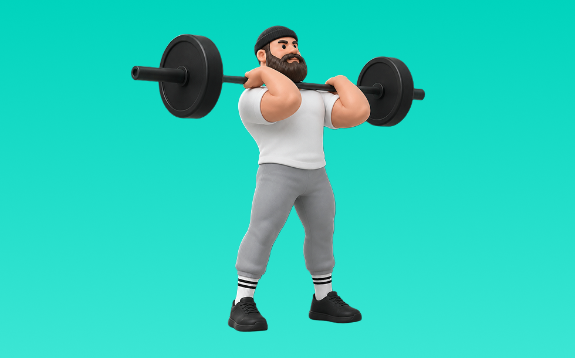

パワークリーン

パワークリーンとは、バーベルを使って「動かす」動作で背中（広背筋、僧帽筋、菱形筋）＋腕（上腕二頭筋）を鍛える種目です。全身の連動と瞬発力が求められるのが特徴で、反動を抑えてコントロールしながら反復します。瞬発力と全身連動の向上が期待できます。
- 対象部位
- 背中
- 器具
- バーベル
- 記録形式
- 重量・回数
- 別名
- クリーン
YouTube動画
-
パワークリーン・クリーン徹底ガイド：パート1 姿勢と柔軟性
-
【特に陸上選手には見てほしい】正しいクリーンのやり方
-
パワークリーン【やり方とフォーム】徹底解剖
-
[English subtitles]パワークリーン・ハイクリーン完全教科書マニュアル CrossFit Power Clean/High Clean Complete Manual
-
パワークリーン・クリーン徹底ガイド：パート２ プル
-
【パワークリーン】初心者向けのやり方！（初めての人におすすめ）
-
【クリーンフォームの練習】綺麗なパワークリーンのやり方！
-
【クリーン 筋トレ 】ハイクリーン/パワークリーンのやり方とフォームを詳しく解説！
-
【やさしく解説】パワークリーンとハングクリーンの違い！初心者におすすめはどっち！？The difference between power clean and hang clean!
-
【爆発的なパワーを手に入れろ！ハングクリーンの正しいやり方とは！？】
-
【パワークリーン】意識する3つのポイント！
-
クリーンとスナッチの練習方法
-
【初心者】パワークリーンのやり方で見る間違いTOP3！(改善策も説明)
-
パワースナッチ・スナッチ徹底ガイド：パート1 姿勢と柔軟性
-
【パワー】パワークリーン（ハイクリーン） ～クイックリフト・爆発的筋力・ジャンプ力～
-
パンプウエイト パワークリーンのフォーム習得
-
【超有料級】山本俊樹選手に教わるウエイトリフティング!!(クリーン編) セカンドプルで最大のパワーを出すには...!? 苦手部分を克服するための練習方法も徹底解説!!
-
【初心者必見！パワークリーンが上達する】ハングパワークリーン修得８ステップ！ #ハイクリーン ＃クロスフィット
-
パワークリーン レクチャー
YouTubeショート
-
パワークリーン！トレーニングにどう組み込むか?#ウエイトトレーニング #パワークリーン#アスリート
-
パワークリーンができるようになるエクササイズまとめ
-
クリーン
-
Clean Pull 【本当にクリーンが爆伸び！クリーンプルのやり方】 #ウエイトリフティング #weightlifting #トレーニング #瞬発力 #crossfit #シバター#矢地祐介
-
鬼の瞬発トレーニング！100kgクリーン連続10回
-
パワークリーンって股関節伸展をメインにするの？ #パワークリーン #クリーン #ウエイトリフティング
-
コレが！パワークリーン🏋️♀️
-
ハイクリーン(パワークリーン)120kg power clean 264lb
-
クリーン105kg成功、陸上走高跳選手175cm60kg
-
クリーンしても脚が速くならない人の特徴#shorts #アストレ
-
爆発的に足が速くなる! 基本のパワークリーンのやり方
-
パワークリーンとハングクリーンの違いをわかりやすく解説 #Shorts #CrossFit #パワークリーン #クロスフィット #筋トレ #トレーニング
-
ハングパワークリーンのエラーとドリルの紹介！#ウエイトリフティング #初心者
-
パワークリーン解説
-
綺麗なフォーム PowerClean パワークリーン 80kg
-
【ハングクリーン】苦手な人はコレを見て！！#楽トレチャンネル #ハングクリーン #ラグビー
-
クリーンvsハングクリーン
-
クリーンの段階練習方法 #ウエイトトレーニング #クリーン初心者#weightlifting #筋トレ
-
【全身トレーニング】パワークリーン5連発 #クリーン #ウエイトリフティング #shorts
-
パワークリーンの重要性を”20秒”で解説！！ #楽トレチャンネル #ストレングストレーニングを日本の主流に #パワークリーン
-
【これをやるだけで20kg伸びた?!】ハングクリーンの裏技 #ウエイトリフティング #クリーン #CrossFit
-
デッドリフトの正しいやり方 #フィットネス #筋トレ #デッドリフト
-
【デッドリフト】腰を痛めない正しいフォーム解説
-
パワークリーン（バーベル使用）
-
色々なクリーン#shorts
-
パワークリーン&プッシュジャーク110kg(power clean & push jerk / 242lb)
動作方法
- ウォームアップで心拍を段階的に上げる
- 目的に合わせてペースを設定する
- 終了後はクールダウンで整える
動作ポイント
- 呼吸を止めない
- 開始直後に追い込みすぎない
ワンポイントアドバイス
- 腕ではなく背中で引く感覚を優先する
- 反動が増えたら重量を一段下げる
目的別回数設定
目的や体力に応じた一般的な目安です。無理のない範囲で調整してください。
- 筋力アップ
- 1〜5回
- 筋肥大
- 6〜12回
- 持久力アップ
- 13〜20回
YouTube動画について
動画はYouTubeの公開情報をもとに表示しています。内容は投稿者によるもので、Biggrによる監修ではありません。
アプリを入手
筋トレやトレーニングの記録はBiggrにお任せください。今すぐ無料で使い始められます。